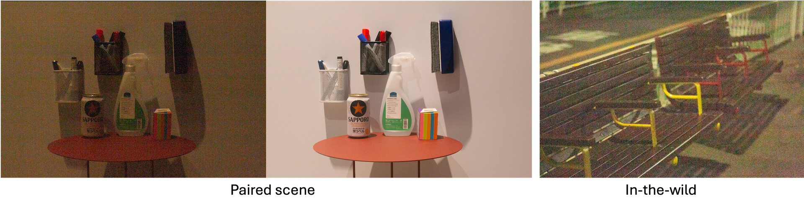

Overview
Welcome to the 1st Edition of the RAW Image Denoising Challenge, hosted at Advances in Image Manipulation (AIM) workshop in conjunction with ICCV 2025.
This challenge aims to develop methods for predicting clean RAW images from their noisy counterparts in a self-supervised and camera-agnostic manner. Specifically, the proposed denoising solutions should eliminate reliance on the labor-intensive process of collecting paired noisy-clean datasets and demonstrate robust performance across diverse camera systems.
To facilitate this, we have curated a comprehensive benchmark dataset encompassing multiple cameras and a variety of scenes, both indoor and outdoor, along with calibration data essential for noise modeling specific to each camera.
Participants are encouraged to approach this challenge from two key perspectives.
- Better noise modeling: novel usage of noise profiles from multiple cameras to enhance the noisy image synthesis pipeline for self-supervised learning.
- Better denoising methodologies: novel designs in network architectures, training strategies, or other techniques to achieve camera-agnostic RAW image denoising.

For the noise synthesis pipeline, we provide a baseline solution based on the methods proposed here. More details can be found at our starter kit repo.

The proposed solutions will be rigorously evaluated using both full-reference and no-reference image quality assessment (IQA) metrics, ensuring a comprehensive assessment of their effectiveness and generalizability.
The top ranked participants will be awarded and invited to describe their solution to the associated AIM at ICCV 2025. The results of the challenge will be published at AIM 2025 workshop (ICCV Proceedings).
News
[05/28/2025] Challenge starts. Website online. Dataset and starter kit released.Data
 TrainingClean images for training are unrestricted, allowing participants to utilize any dataset as long as its details are thoroughly documented in the final factsheet.
As a starting point, we recommend the clean images from the SID dataset (Sony split), which can be accessed at here.
TestingPlease register to the competition via codabench to access the benchmark data and sample submission.
For benchmarking, we collected a dataset using four cameras: SonyA7R4, SonyA6700, SonyZVE10M2, and Canon70D.
To support the formulation of noise synthesis pipelines, we provide calibrated system gains and dark shading maps for each camera. The dataset includes two types of scenes:
- Paired Scene: Noisy images are captured under three ISO levels (800, 1600, and 3200) and three digital gains (10, 100, and 200). Each noisy image is paired with an aligned clean image obtained using a long exposure at the base ISO level.
- In-the-Wild Scenes: Noisy images are collected under five ISO levels (800, 1250, 1600, 3200, and 6400) and various digital gains ranging from 10 to 200. These scenes represent real-world conditions, providing diverse and challenging scenarios for noise modeling and denoising.
This benchmark dataset serves as a robust foundation for participants to develop and evaluate their camera-agnostic RAW denoising solutions.
More details on the dataset structure can be found in our starter kit repo.
The Dataset is for this challenge and research purposes only. Commercial use is not permitted.
Evaluation
Development phase- PSNR & SSIM on center-cropped (512, 512, 4) RGGB-packed Bayer RAW of the paired data.
The team ranking will be determined by ranking each metric:
- PSNR, SSIM, and LPIPS on paired data, and
- ARNIQA and TOPIQ on in-the-wild images.
All evaluations will be measured on the full-resolution image.
- PSNR & SSIM on Bayer RAW
- LPIPS, ARNIQA, and TOPIQ on sRGB with a simple ISP pipeline.
- Maximum 15 Million parameters
- Ensembles of multiple models are not allowed
- FLOPs/MACs on (1, 4, 512, 512) shall be less than 150GMacs
More guidelines can be found in the starter kit repo.
Organizers
If you have questions, please contact us via the challenge forum.
Feiran Li (Sony AI)
Jiacheng Li (Sony AI)
Beril Besbinar (Sony AI)
Vlad Hosu (Sony AI)
Daisuke Iso (Sony AI)
Marcos V. Conde (University of Wuerzburg, CIDAUT AI)
Radu Timofte (University of Wuerzburg)
References
Noise Modeling in One Hour: Minimizing Preparation Efforts for Self-supervised Low-Light RAW Image Denoising, in CVPR 2025
Toward Efficient Deep Blind Raw Image Restoration, in ICIP 2024
Learnability Enhancement for Low-light Raw Denoising: Where Paired Real Data Meets Noise Modeling, in ACM MM 2022
Rethinking Noise Synthesis and Modeling in Raw Denoising, in ICCV 2021
A Physics-based Noise Formation Model for Extreme Low-light Raw Denoising, in CVPR 2020